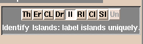
Editing Tools
- Threshold
- Change Label
- Change Island
- Measure Island
- Erode
- Draw
- Save Island
- PhaseWire
- Remove Islands
- Identify Islands
- Change Label
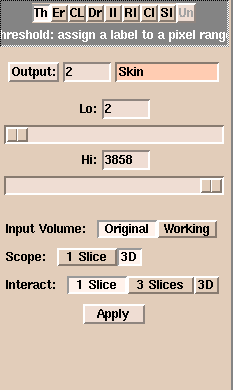
Threshold Interface
In the example below we are segmenting CT skull bone have changed the label to be blue. Notice that the skull is well-defined and separated from the rest of the image. When you have optimally adjusted the threshold sliders for your data, hit the Apply button and the slicer will update the Working volume with your new label of thresholded data.
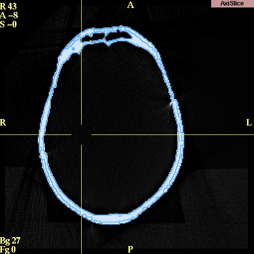
Results of thresholding
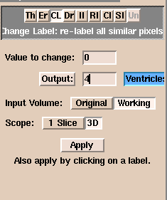
Change Label Interface
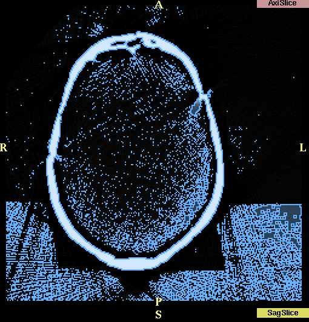
A Good Candidate for Change Island
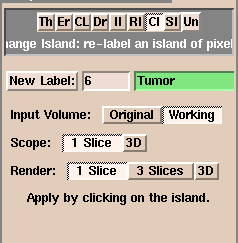
Change Island Interface
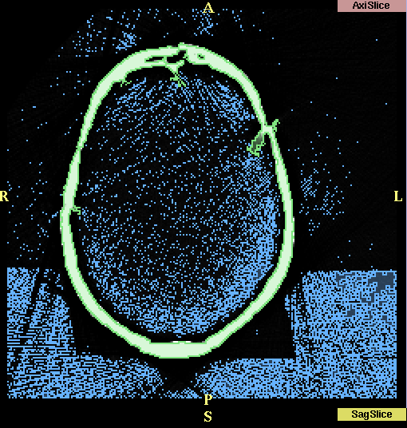
Results after applying Change Island
Sometimes it is useful to calculate the volume of some editted data. To do this, you can use the Measure Islands feature.
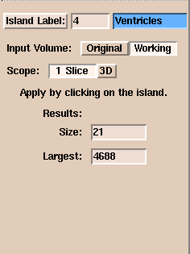
In the case above, we have clicked on label four and the chosen the scope to be one slice. After clicking on our island of choice, the slicer displays two pieces of information: the Size: is the size in pixels of the island that we clicked the mouse on. The Largest is the largest island located given the scope we have chosen (1 slice or 3D). If you want to calculate the total volume of your island, you can do the following: Take the size and use the following formula:
size * pixel_size * pixel_size * (thickness + spacing)
Another useful editor feature is the erode/dilate tool. Erosion literally erodes or removes the pixels at the border of all islands and dilation does the reverse, it adds pixels around the borders of all islands. This tool is particularly good to use if you have two distinct pieces of anatomy that are only partially connected and you want to separate them. The erosion process will break the connectivity. Another case could be If you have many small islands, some of which are connected to the structure of interest as is the case below.
Prior to Erosion/Dilation
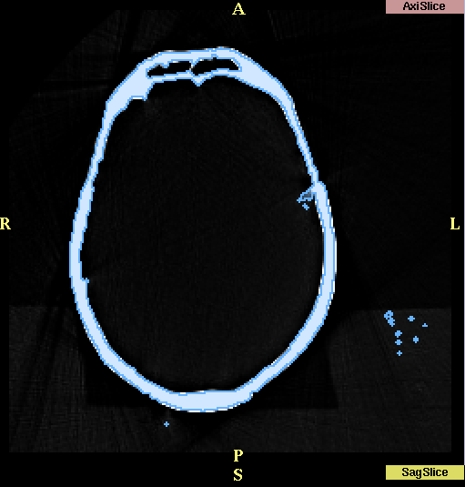
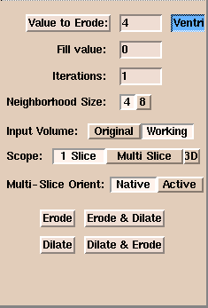
There are a few things to note about this feature:
- If there is more than one label in your data, make sure to choose the correct one!
- the fill value does not seem to work - leave the value 0 or no effect will take place.
- switching neighborhood size to 8 will do a more aggressive erosion/dilation
- for scope of the erosion/dilation the difference between multislice and 3D is that multislice has the one slice erosion applied to each slice and the 3D erosion treats the whole volume at once.
- Multi-Slice Orient means that if you click on a view other than the axial view with the mouse and change the Orient to Active, the erosion/dilation will be applied to that view instead of the Axial view.
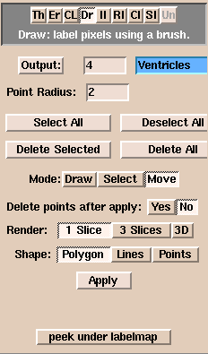
To start using the draw tool, simply set the output label to the color of your choice and begin drawing with the left mouse on on the ROI. You can zoom the image you are drawing on with the right mouse button to make the ROI larger. When you have finished drawing the outline of the ROI, hit the Apply button and slicer will fill the ROI with the output value. You can repeat the draw/apply steps as many times as is necessary. It is useful to go over the function of the widgets on the Draw interface because the draw feature is flexible and powerful.
- The Output: allows you to select the color of the ROI you will be creating
- Point Radius (default 0) Setting this to a small positive number(1 or 2) allows you to see the points you are drawing. This is useful if you want to move or delete selected points.
- The four buttons labelled Select All, Deselect All, Delete Selected, and Delete All, are used when the Mode: is set to select or move. Set the point radius to a small number and your points will be marked as small circles. When you select a point by clicking on it, it changes color. If you select all, then all points turn yellow. You can use this feature to delete or move point(s) depending on what you have selected.
- Mode: Determines how the left mouse button works in the draw window.(middle button does translate or shift and right button does zoom/unzoom)In Draw mode you do the drawing, in Select mode you can choose points, and in Move mode, you can move selected points. Note: slicer sometimes changes the mode after an action as well so so be aware of this.
- Delete Points after Apply: (default is yes) When set to yes, the list of points will be cleared after You hit Apply. If set to no, the points will be kept in the list after you Apply
This is another drawing tool for outlining features on your images. . Phasewire follows edges or contours in your images. Click the left mouse on the edge of the feature that you want to begin segmenting and then let the mouse-button go but follow the path with the mouse on the outline of the feature. In most cases, Phasewire will track the edge of the feature without any mouse-clicks. When the "wire" starts to stray from the contour, click the mouse-button and the contour will be drawn automatically. Let the mouse-button go, and again pull the mouse over and along the contour until just before the wire fails to follow the contour you want and click. Repeat this until you have outlined the contour. Phasewire is much faster since it does the work of following the outline of your feature and can be more accurate than tracing by hand, assuming that the contour it follows matches the anatomy you are interested in.
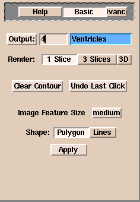
There are only a few things to mention as this interface is fairly straight-forward and there are help messages for each widget(put the mouse over the widget to see the help message)
- you can always back up to any point before you hit apply by using the Undo Last Click and Clear Contour buttons.
- change the feature size button (small, medium,large) depending on the size of the feature you are outlining.
- Shape: when set to polygon(default) will fill in the feature when you hit apply, when set to Lines will just create the outline and not fill in the feature.